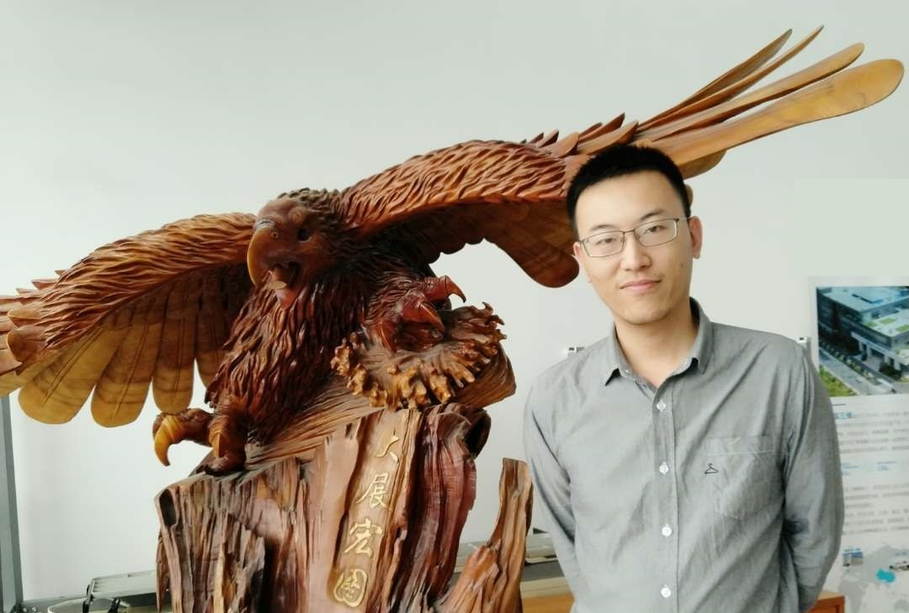

|  |
Chunyang Ye （叶春阳）
|
|
|
Atlas Refinement with Bounded Packing Efficiency
Hao-Yu Liu, Xiao-Ming Fu, Chunyang Ye, Shuangming Chai, Ligang Liu ACM Transactions on Graphics (SIGGRAPH), 38(4), 2019 [Project page] |

|
Progressive Parameterizations
Ligang Liu, Chunyang Ye, Ruiqi Ni, Xiao-Ming Fu ACM Transactions on Graphics (SIGGRAPH), 37(4), 2018 [Project page] [Code] [Bibtex] [DOI] |
| HUAWEI Scholarship for Graduate Students | 2018 |
| Yang Yuanqing Top Research Fellowship | 2018 |